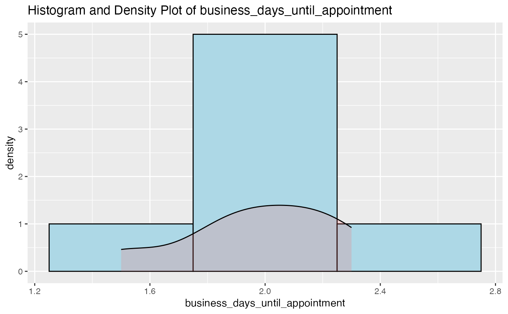
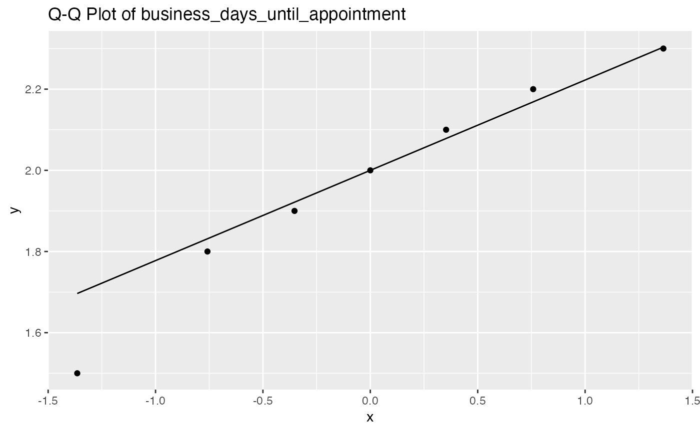

This function checks the normality of a specified variable in a dataframe using the Shapiro-Wilk test and provides summary statistics (mean and standard deviation if normal, median and IQR if not normal).
Value
A list containing the summary statistics (mean and standard deviation if normal, median and IQR if not normal).
Examples
# \donttest{
sample_data <- data.frame(
business_days_until_appointment = c(1.5, 2.0, 1.8, 2.2, 1.9, 2.1, 2.3)
)
check_normality(sample_data, "business_days_until_appointment")
#> Starting normality check and summary calculation for variable: business_days_until_appointment
#> Data extracted for variable: business_days_until_appointment
#> Shapiro-Wilk normality test completed with p-value: 0.873269208208328
#> The p-value is greater than 0.05, indicating that the data is approximately normal.
#> Histogram with Density Plot created.
#> Q-Q Plot created.


#> Data is approximately normal. Mean: 1.97142857142857, SD: 0.26903708365382
#> $mean
#> [1] 1.971429
#>
#> $sd
#> [1] 0.2690371
#>
#> Summary calculation completed for variable: business_days_until_appointment
#> $mean
#> [1] 1.971429
#>
#> $sd
#> [1] 0.2690371
#>
# }